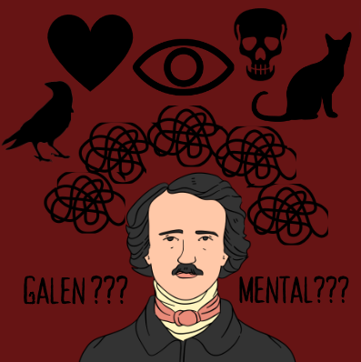
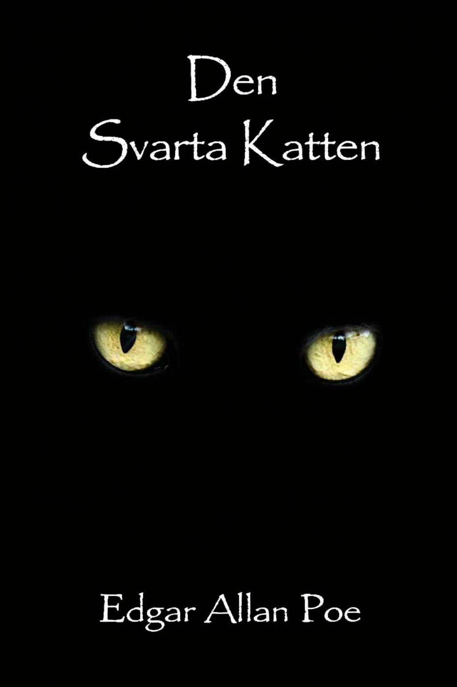
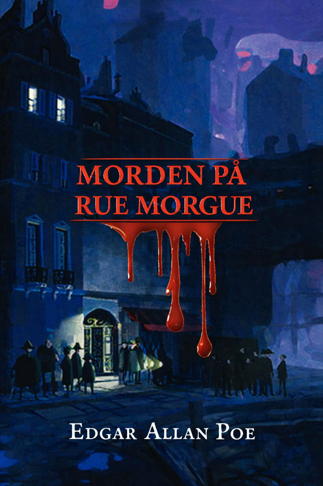

Edgar Allan Poe skrev inifrån lidandets kärna. Hans berättelser om
besatthet, paranoia, sorg och psykologiskt sammanbrott var inte bara
gotiska underhållningsövningar – de var rapporter från ett belägrat
sinne. Född 1809 och död 1849 under omständigheter som fortfarande
debatteras, levde Poe ett liv präglat av förödande förluster,
fattigdom, beroende och emotionell instabilitet. Det som gör honom
remarkabel är inte bara att han led, utan att han förvandlade detta
lidande till litteratur av sådan psykologisk precision att den, nästan
två århundraden senare, läses som en diagnostisk handbok skriven i
vers och blod.
Poes verk befinner sig vid ett unikt vägskäl: det speglar sin tids
begränsade förståelse för psykisk hälsa, samtidigt som det föregår det
psykologiska språk vi använder idag. Att läsa Poe genom ett modernt
perspektiv är att upptäcka att han förstod det mänskliga sinnets
kapacitet för självdestruktion med en intimitet som fortfarande
förvånar.


Poe kämpade djupt under hela sitt liv med alkoholism, depression och vad många forskare tror var en form av bipolär sjukdom eller svår ångest. De upprepade förluster han uthärdade – sin mor, sin fostermor och senare sin unga hustru Virginia – förstärkte hans psykologiska instabilitet. Dessa plågor var inte skilda från hans skrivande; de var hans skrivande, och blödde direkt ut på sidan i form av skuldtyngda berättare, paranoia och besatthet inför döden.
Poe presenterar sitt centrala tema genom den långsamma psykologiska upplösningen av en opålitlig berättare som sjunker från en kärleksfull husdjursägare till en våldsam mördare. Temat är inte bara "skuld" – det är tanken att människor drivs att göra det de vet är fel, vad Poe kallar "perversitetens ande." Han framställer detta som ett grundläggande fel i den mänskliga själen: "Vem har inte, hundra gånger, funnit sig begå en skamlig eller dum handling av ingen annan anledning än att han vet att han inte borde?" Den svarta katten, Pluto, fungerar som en spegel av berättarens eget samvete. Efter att ha gjort katten blind och hängt den hemsöks berättaren av dess ersättare – en andra katt med en vit fläck som gradvis antar formen av en galge, en symbol för hans oundvikliga straff. Poe använder denna gotiska symbolik för att visa hur skuld manifesterar sig fysiskt och förföljer den skyldige. Berättarens hektiska inmurning av sin hustrus kropp – och kattens skrik inifrån väggen – är en av litteraturens mest kusliga skildringar av ett sinne sveket av sina egna brott. Poes budskap är djupt psykologiskt: han antyder att den mänskliga kapaciteten för självdestruktion inte är yttre utan inre och oundviklig. Berättelsen, som speglar hans egna kamper med alkoholism och oregelbundet beteende, läses nästan som en bekännelse – en man som älskar, förstör och inte kan förklara varför.

Medan "Den svarta katten" kapitulerar inför irrationaliteten, firar Morden på Rue Morgue dess motsats. Poe presenterar temat analytiskt tänkande som en nästan övermänsklig gåva genom sin detektiv C. Auguste Dupin, som allmänt betraktas som världens första fiktiva detektiv. Berättelsen öppnar med en meditation över det analytiska sinnet självt: Dupin beskrivs som en person som äger ett sinne kapabelt att reda ut de mest förbryllande problemen genom ren, kall logik. Det brutala dubbelmordet på Madame L'Espanaye och hennes dotter – ett brott som Parispolisen finner helt oförklarligt – löses inte enbart genom fysiska bevis, utan genom Dupins noggranna eliminering av det omöjliga. Hans slutledning att mördaren var en orangutang nås genom analys av vittnesmål om en röst som inte talade något igenkännligt mänskligt språk. "Fransmannen... hörde en röst... skärande... Spanjoren... hörde en röst... hård." Inget vittne kunde identifiera språket – för det var inget språk alls. Poes budskap här står i fascinerande kontrast till hans mörkare verk. Han tycks hävda att kaos och skräck är lösbara – att universum, oavsett hur groteskt, ger vika för förnuftet om sinnet är tillräckligt disciplinerat. Detta kanske speglar Poes egen längtan efter kontroll över ett liv som kändes ständigt oordnat. Dupin är det jag som Poe kanske önskade att han kunde vara: lugn, distanserad och behärskande i kommando över en rationell värld.


När Poe skrev båda berättelserna i början av 1840-talet var Amerika ett samhälle utan psykologiskt språk, kriminalteknisk vetenskap eller institutionella system för att hantera varken brott eller psykisk ohälsa. Den svarta katten uppstod under höjdpunkten av nykterhetsrörelsen, där alkoholism betraktades enbart som ett moraliskt misslyckande snarare än ett medicinskt tillstånd – det fanns inga rehabiliteringscenter, inga terapeuter och inget ramverk för att förstå hur substanser omprogrammerar mänskligt beteende. Våld i nära relationer var en privat angelägenhet, osynlig för lagen. På samma sätt, när Morden på Rue Morgue publicerades, existerade organiserad brottsutredning knappt. Det fanns inga fingeravtrycksdatabaser, inga kriminaltekniska laboratorier och inga professionella detektiver. Brottsbekämpning var trubbig, reaktiv och till stor del beroende av erkännande eller tur. Idag har båda dessa världar förändrats dramatiskt. Alkoholbrukssyndrom klassificeras nu som en legitim hjärnskada, och vi förstår vetenskapligt hur substanser urholkar impulskontroll och förvränger beteende. Lagstiftning mot våld i nära relationer, krisjour och stödsystem för överlevare – om än fortfarande ofullkomliga – existerar i en skala som Poes era inte kunde ha föreställt sig. På den andra sidan har brottsutredning blivit en sofistikerad, tvärvetenskaplig vetenskap: DNA-analys, beteendeprofilering, digital kriminalteknik och psykologisk kriminologi har alla gjort Dupins dröm om förnuftsbaserad detektivverksamhet till en mycket verklig institution.
The most haunting similarity across both stories is how little human nature itself has changed. The narrator of The Black Cat minimizes, blame-shifts, and genuinely convinces himself he was once a good man — a pattern that modern psychology now labels with clinical precision, but which plays out in domestic abuse cases every single day. Poe's concept of perverseness — the irrational drive to destroy what one loves — maps almost directly onto what modern behavioral science calls compulsive self-sabotage and addiction-driven decision-making. He didn't have the vocabulary of dopamine or the prefrontal cortex, but he described their consequences with unsettling accuracy. Likewise, Dupin's core method in Rue Morgue — stripping away assumption, following evidence to its logical conclusion no matter how strange, and exposing the failures of institutions too proud to admit confusion — is essentially what modern forensic investigators and criminal profilers are trained to do. The thinking Poe imagined hasn't just survived; it became the foundation of an entire profession. The key difference lies in accountability and visibility. In Poe's world, the abuser in The Black Cat could realistically expect to never face consequences — the system simply wasn't designed to look. And in Rue Morgue, the police are portrayed as almost comically incompetent, entirely dependent on a lone private genius to make sense of chaos. Today, forensic science, surveillance, digital records, and legal frameworks have made both impunity and investigative ignorance far harder to sustain — though certainly not impossible.
Together, these two stories capture the two great tensions that modern society is still actively wrestling with: the terrifying pull of our own self-destructive impulses, and the redemptive but fragile power of reason to impose order on chaos. The Black Cat is still relevant because cycles of abuse, addiction, and self-deception have not gone away — they have simply been renamed and better documented. In an era shaped by movements like #MeToo and growing public conversation around accountability, Poe's choice to tell the story from inside the abuser's mind remains deeply provocative. It doesn't excuse the narrator, but it refuses to make him a simple monster, forcing readers to confront how ordinary the psychology of destruction can be. The Murders in the Rue Morgue speaks just as powerfully to a world increasingly reliant on data, logic, and analytical systems — while simultaneously watching those systems fail or be manipulated. Dupin's warning that institutions can be confidently wrong feels remarkably current in an age of wrongful convictions, forensic evidence misuse, and debates over algorithmic bias in criminal justice. Poe, writing in the 1840s with no scientific framework and no institutional support, essentially looked into the human condition and described two things we are still arguing about today: why we destroy ourselves, and whether reason is enough to save us.